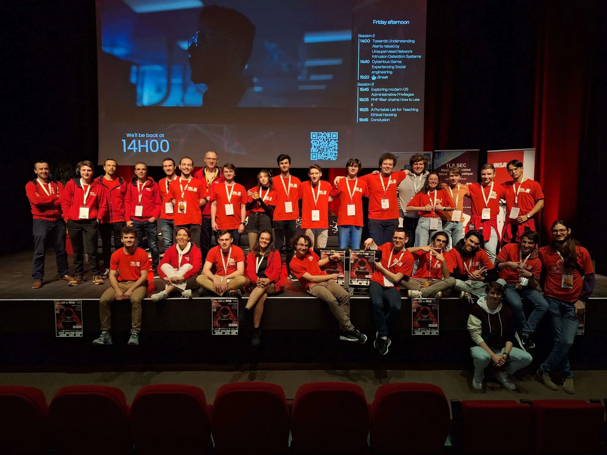
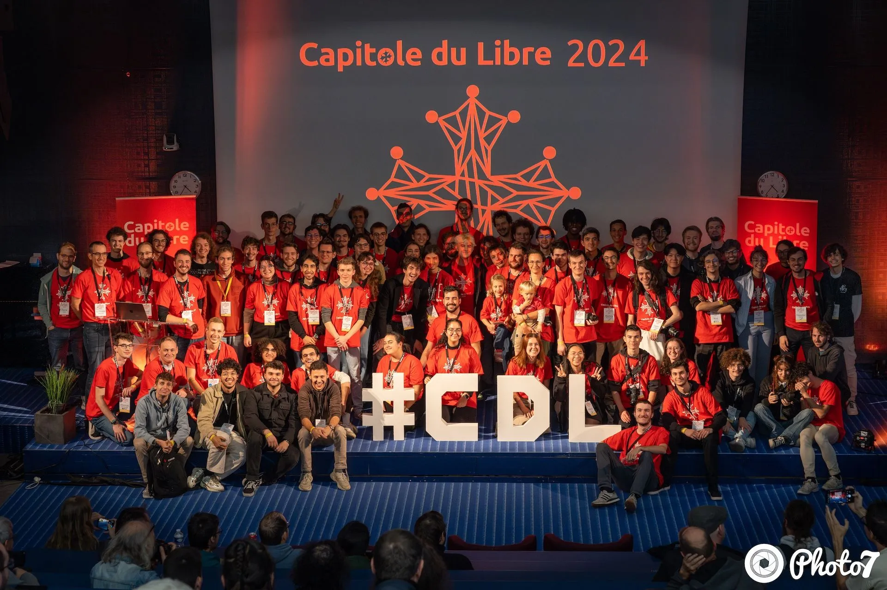
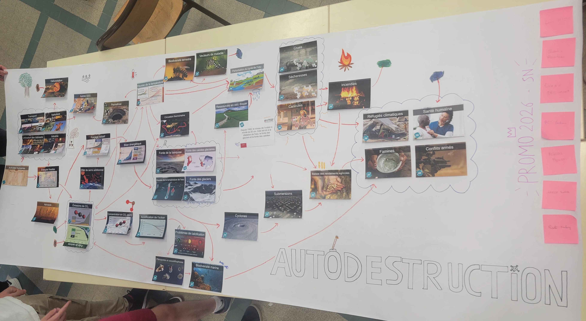

^
^
Sustainability & Civic Engagement
THCON 2024
I participated as a volunteer on the 2024 edition of the THCON which is 2 days of conferences over cyber security. I also
volunteered to help during the after event which is a CTF held at ENSSEIHT. As a volunteer at this
event, I helped by welcoming and guiding visitors. This was a great opportunity to me as I was able
to work as a member of a volonteering team at a convention on a field that interests me which is
cybersecurity. The CTF was also really enrishing as I was able to experience the intensity of the event.
In the end, for this event, I volunteered for roughly 20 hours.
Here is a picture of the people that volunteered during
the conferences :

Capitole du Libre 2024
I participated as a volunteer on the 2024 edition of the
Capitole du libre
which is an event that consist in 2 days of conferences on free software at ENSEEIHT and an install
party. As a volunteer at this event, I helped by welcoming and guiding visitors, but I also helped
people, at the install party, to install Linux on their computer with the net7 association. This was a
good opportunity as I was able to enhance my knowledge about Linux and operating systems.
In the end, for this event, I volunteered for roughly 15 hours.
Here is a picture of the people that volunteered during
the event :

Climate Fresk
Thanks to my school, ENSSEIHT I was able to participate in an interresting activity, the Climate Fresk.
Here is our proposition :

It's a really interresting activity that was created to raise awareness about climate change.
In group, we have been given cards with causes and consequences of climate change. The goal was to
organize the cards with cards with arrows in such manner that
the cards after the arrow are direct consequences of the cards before the arrows.